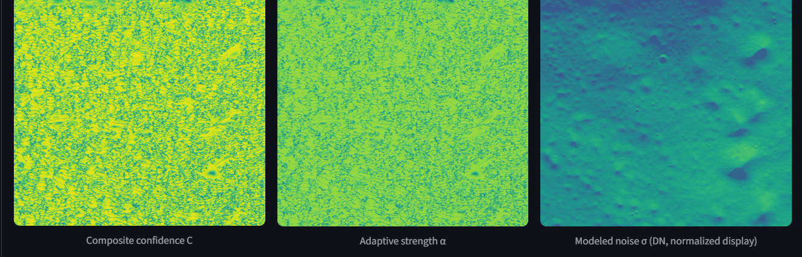
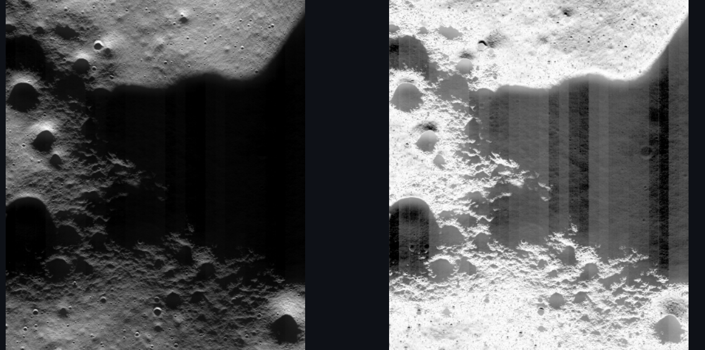
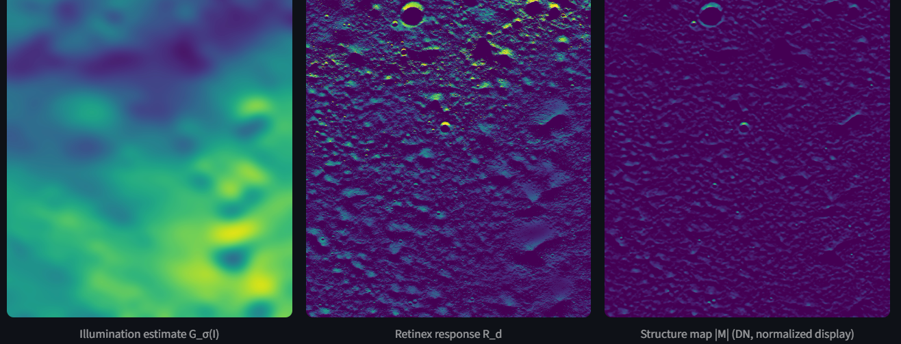
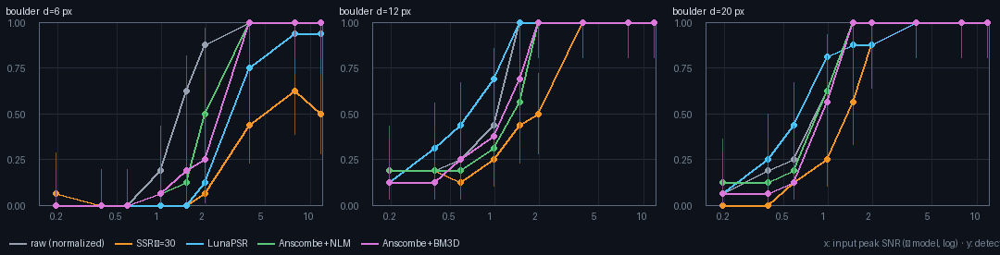
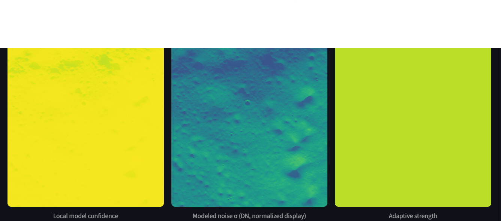

LunaPSR
Making the Moon’s permanent shadows analyzable — without inventing detail.
A read-only lab that enhances faint Chandrayaan-2 OHRC images, compares methods, and records exactly what changed. For lunar scientists, image analysts, and reviewers.
All enhanced imagery is a derived representation. We do not claim recovered geology, measured SNR, or information the sensor did not collect.
The signal is barely above the noise.
Permanently Shadowed Regions (PSRs) near the Moon’s poles receive no direct sunlight. OHRC, the Orbiter High Resolution Camera, can image them — but the data are extremely faint, and very easy to over-enhance.
- Weak signal: raw values span 1–5 DN in the studied region (mean 3.056, std 0.467). DN is the raw brightness unit.
- Noise: the Phase 4B physics model puts total noise at σ ≈ 0.511 DN — a model-based SNR ≈ 6, not a measured SNR.
- False detail: a global stretch mostly reveals sensor noise. Aggressive Retinex can create edges, textures, and isolated components that were not in the data.
- No audit trail: comparing methods on a 1.2-gigapixel product is slow, inconsistent, and hard to reproduce.

One workflow: from raw pixels to evidence you can review.
LunaPSR is not a single filter. It is a complete lab for reading, enhancing, comparing, and documenting real lunar images — without modifying the source product.
The pipeline is always the same: read-only in, documented evidence out.

Enhance only where the signal can support it.
A normal enhancement applies one curve everywhere. LunaPSR uses a physics-based noise model to decide how much enhancement each part of the image can justify.
- Noise is predicted, not guessed. The model combines shot noise, read noise, and quantization noise at each brightness level.
- Two-factor confidence: is the local signal strong, and is local variation above the modeled noise?
- Adaptive strength α stays conservative where the data look like noise, and increases only where real structure is supported.
- Adaptive Retinex separates illumination, response, and structure instead of applying one global curve to the whole scene.

We tested it against known ground truth — and report where it loses.
Phase 5C injects known craters and boulders into eight real 256×256 OHRC dark tiles. Five methods, one generic detector, per-tile 5% false-positive calibration.
- Raw wins overall (AUC 0.882 vs 0.868). Enhancement is not required to detect these features.
- LunaPSR has a narrow win. At ≤ 0.5 DN it ties raw overall (0.744 vs 0.742) and leads on faint 12–20 px boulders (0.704 vs 0.638; SSR 0.559).
- It also loses. LunaPSR is the worst method for 6 px boulders and less sensitive than raw for faint craters. SSR amplifies noise ~50×; LunaPSR ~14.5×.

What you can do with LunaPSR.
Use it to inspect a real product, compare enhancement methods, and see exactly what each step changed — before you trust the result.
- Inspect a real OHRC product read-only.
- Compare gamma, CLAHE, SSR, denoisers, LunaPSR, and Adaptive Retinex side by side.
- See confidence, noise, structure, and edge diagnostics for every view.
- Export derived images, metrics, and a reproducible run record.
- Run the lab locally with the full 1.2 Gpx product; the cloud demo uses the bundled sample.
